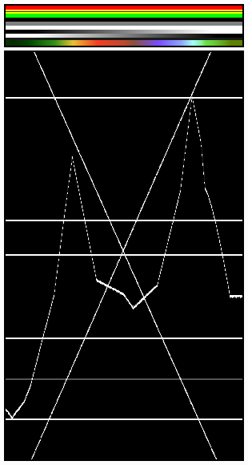

显示模式¶
There are different display modes available, each having a specific purpose.
图像预览¶
图像预览显示了保存时候的视频应该是什么样子。这是主要的工作模式，用来添加、移动、剪切、打组片段(生成复合片段)，还可以通过特效拼接片段。
亮度波形¶
这种模式会为选中的通道输出色彩亮度和色彩对比度。
亮度波形能够评估分布于视频信号上的亮度质量，你可以在每个控制显示器查看亮度波形，而非按通常的导出显示。
这种显示为每条扫描线绘制亮度值。所有线是画在相互的顶部。如果线穿过(就像很多扫描线)，点会变亮。如果你把示波器插入到电视机的视频亮度输出,就可以更容易理解这种现象。基本上是相似的。
In this mode, the vertical axis represents the luminosity: 0 at the bottom, 1 at the top; the horizontal axis is a mapping from the horizontal axis of the frame. There are as many curves as scanlines in the frame: each one of these curves represents the luminosity of the pixels of one line. Moreover, the color of a pixel in this mode represents the number of pixels from the matching column of the frame sharing the same luminosity, i.e. the number of curves that cross at this point (black/transparent, for no pixel, white/opaque for at least three pixels).
- 分离颜色
将RGB通道分离到单独的图表中。
这模式有益于：
如果波形没填满画面，你可能需要使用明度/比度修改器，直到它填满整个画面(对比度自动调节)。
使用更高级的曲线或者色彩平衡修改器，你可以更精确。
你可以判断是否要丢弃整体，因为它完全的扭曲失真，并且剪辑在顶部或者底部。

亮度波形中的各水平线与图像的统一彩色线相匹配。注意， '灰色 20%' 一像素宽度线 (里面的黄色片段) 亮度波形里用一条灰色的线表示。绘制"X"的两条线来自个两个线性色调 (白色-->黑色和黑色-->白色)。最后，虚线与图像底部的复杂色调相匹配。¶ |

曲线是相当明显的。我们发现天空亮度为80-100%，海洋亮度约为40%，山区亮度为10-20%，阳光部分的亮度约为40%。¶ |
Note
请注意，图像(顶部的第一个绿框)只有50px高度，是为了限制 亮度波形 中显示的曲线数量。
这种显示用于检查在通道中的所有帧的合适对比度和亮度。当影片中应当有均匀亮度的斑点但却没有时，这看起来就像熄灭一盏闪光灯或者突然打开另外一个电灯。如果在不同的光照但本应是连续的条件下渲染或拍摄两个片段就会发生这种现象。
色度矢量显示器¶
Use this mode to judge the quality of the color-distribution and saturation, you can also view a U/V scatter-plot.
图片将转换为YUV格式。U和V值表示颜色的角度。对于图像中的像素，在U和V值的位置的显示中绘制一个点。如果几个像素恰好具有相同UV值，则图像中的像素点会变亮。
为了帮助您了解色彩的含义，会显示一个标记着极端位置(红色、品红色、蓝色、青色、绿色、黄色)的六边形，并用红十字标记原点。
换而言之，对于所选通道，该模式会在六边形里显示图像的颜色空间。六边形的每个点是一个主要颜色：红色、品红色、蓝色、青色、绿色、黄色。黑色位于中心，整体饱和度随着点靠近外部而缩放。右边的示例显示了该图像有很多红色(50%饱和度)和少量的蓝色，并且没有绿色。
始终要记住激活最终结果的附加控制显示器。颜色校准是一种品味问题，取决于你想要的效果。
使用该显示检查过多的色彩饱和度。虽然过饱和的图像看起来适合操作和计算机显示，但当它们在大屏幕电视上显示时就多半不是这样了。
这模式有益于：
If your picture looks very moody or desaturated you might want to take a look at the U/V plot. You will most likely see all pixels building a crowd at the origin. If you add saturation using the Saturation slider in the Filter panel or any modifiers that change color, you can see in the U/V plot if you distort the color.
如果你进行手动匹配颜色，则能匹配到你在不同通道显示器看到的角度。

示例图像。¶

色度矢量预览示例。¶